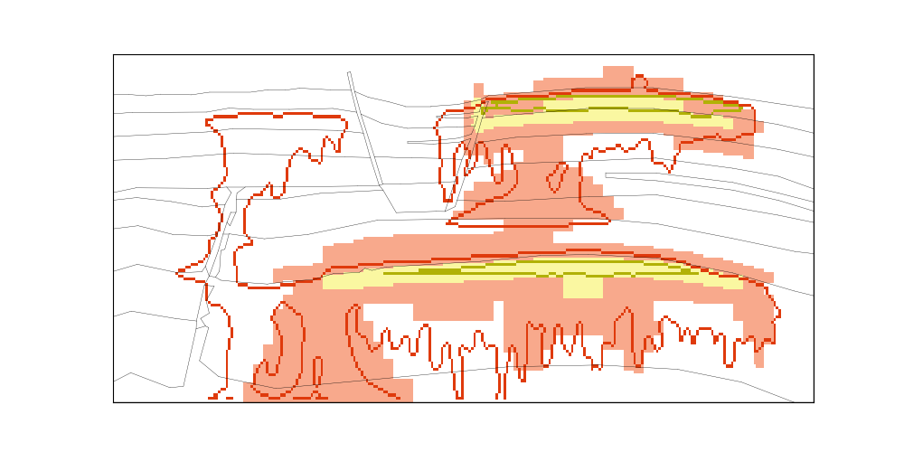
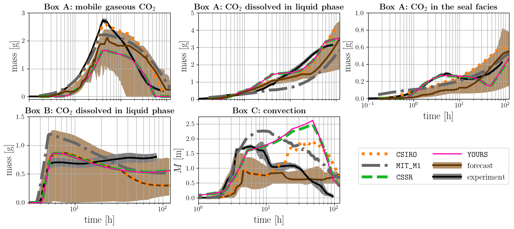

Examples
Hello world
The examples folder contains a few configuration files with low grid resolution and shorter simulation times (for initial testing of the framework). For example, by executing:
pofff -i single.toml -t 24,48,72
The following is the figure map_24h.png. You can compare your example results to this figure to evaluate if your example ran correctly:

Adding your results
The publication folder contains the configuration files used for the results in the pofff paper (see publication for details in the steps to reproduce the figures in the paper).
pofff -i results.toml -o YOURS -m single -t 24,48,72,96,120 -f all
generates the figures in the paper in addition to the new simulation labeled as the name of the output folder (“YOURS” in this case), e.g., for the compare_all_time_series.png:

Tip
One can always modify the plotting scripts to change the colors, line styles, font sizes, etc.
We welcome pull request with your configuration files to the examples folder for cases with better results (less error in the error_table_satmin-0.01_conmin-0.1.csv).
Note
One can always also generate the sparse_data.csv, time_series.csv, and spatial_map_Xh.csv files using other simulators and use the pofff tool to compare to the experimental data, forecast, CSIRO, MIT_M1, and CSSR data. To this end, you can add those files to a folder call “MY_SIMULATOR” and execute:
pofff -t 24,48,72,96,120 -m none -o MY_SIMULATOR -f all
Note that the spatial maps csvs need to be given in the x range of 0 to 2.8 m and z range of 0 to 1.2 m.
History matching
The flag -m can be set to everest or ert to run the history matchings, which also requires to set additional variables in the toml configuration file (e.g., parameters to history match, number of parallel runs, random seed). For example, to run the last iteration of the history matching in the pofff paper corresponding to everest_iter_3.toml:
pofff -i everest_iter_3.toml -o everest_iter_3 -m everest -t 24,48,72,96,120 -f all
Warning
If you are running everest_iter_3.toml locally in your machine, then you might need to decrease the number of parallel runs (cores = 50 in line 39) and maximum function evaluations (max_function_evaluations = 200000) to your system capabilities.
The possible parameters to hm are the 13 parameters for facie 1 to 6 (e.g., permx2, pen5, np6), in addition to consider isotropic permeability (e.g., perm3), and a constant to multiply the tickness (i.e., thicknessmult). For additional examples on how to set the history matching studies using ert or everest, see/run the scripts in the tests and publication folder.
Note
We refer to the documentation of everest and ert for the description of the different keywords. While via the toml configuration files in pofff we have added the most common keywords, then one could always add additional keywords to the generated (after execution of pofff) everest (everest.yml) and ert (ert.ert) configuration files, and after running the history matching directly using the everest/ert command line executables. Details on all supported (and format types) variables that can be assigned via toml configuration files can be found in config.py. After the runs, one can always use pofff to postprocess the data and generate the figures, running with the flag -m none (see the profiling.py for an example of splitting the generation of the files, running of everest, and postprocessing). Please raise an issue for missing keywords in the toml configuration files that you would like to be added.
Visualization
To postprocess the data, plopm can be used.
Tip
You can install plopm by executing in the terminal:
pip install git+https://github.com/cssr-tools/plopm.git
For example, if you run the appendixb.toml configuration file and change the ‘inj’ variable in line 17 to:
inj=[[8100, 300, 3E-7, 0],
[10200, 300, 3E-7, 3E-7],
[3300, 300, 0, 0],
[64800, 3600, 0, 0],
[345600, 21600, 0, 0]]
Then the following GIF is generated by:
pofff -i appendixb.toml -o pofff+plopm -m single -c '5e-2' -f none plopm -v xco2l -i 'pofff+plopm/POFFF+PLOPM' -d 16,5 -mask satnum -m gif -dpi 1000 -f 20 -loop 1 -cformat .1e -cbsfax 0.30,0.01,0.4,0.02 -interval 437.5 -maskthr 1e-5 -tunits h -cnum 5 -clabel 'CO$_2$ mass fraction in liquid [-]' -t 'FluidFlower simulation (GitHub/cssr-tools/pofff),'

The total simulation time for this GIF (five days of experiment) using eight CPUs for OPM Flow in a Mac is LESS THAN TWO MINUTES!!!
See the plopm online docmunetation for additional information of supported flag parameters to generate customized PNGs and GIFs.